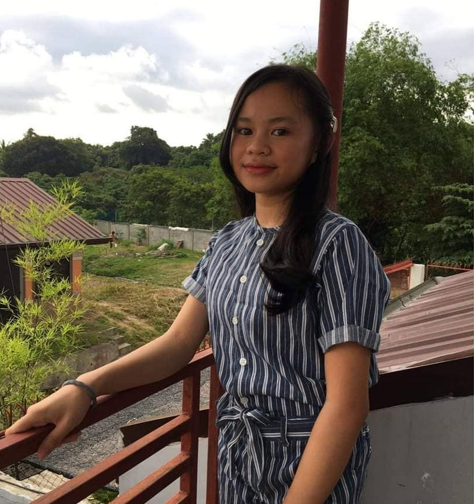

Community Profile
By: Dacudao & Serdoncillo
 Badjao Community or Badjao of Matina Aplaya Incorporation is an institution dedicated for the badjao families and individuals.
Its purpose is to promote different livelihood programs among their badjao members, implement literacy programs for adults and pre-school children,
conduct and facilitate training for the development and preservation of their cultural heritage, engage in the environmental rehabilitation and preservation
along the coastline, and more. Currently, the community or the partner institution have over 178 families, 700+ individuals, and an estimated 99 students who
are enrolled in Matina Aplaya Elementary Schooling.
Badjao Community or Badjao of Matina Aplaya Incorporation is an institution dedicated for the badjao families and individuals.
Its purpose is to promote different livelihood programs among their badjao members, implement literacy programs for adults and pre-school children,
conduct and facilitate training for the development and preservation of their cultural heritage, engage in the environmental rehabilitation and preservation
along the coastline, and more. Currently, the community or the partner institution have over 178 families, 700+ individuals, and an estimated 99 students who
are enrolled in Matina Aplaya Elementary Schooling.
By: Baliota & Serdoncillo

We are the Group 4B of 9-Bellarmine from Ateneo De Davao University Junior Highschool, and we are prepared to assist in resolving the
issues that our partner institution is having. We have gathered data about the partner institution that enables us to view the difficulties
and offer solutions that will aid in resolving both issues.
We are attempting to solve the financial problem of the institution by raising awareness about the community to the public about the
current financial issues of the institution, by encouraging the people in every place in this world to support, and donate either finances
or basic needs like food and water, and by gathering people to volunteer for outreach programs that aims to provide services that the community might not have access to.
We will also attempt to solve the scattered waste/pollution problem through our SIP research where composting are used to lessen or
mitigate pollution by reducing the carbon dioxide in the air, and releasing cleaner and fresher air.
About the Web Designer

Francesca Grace Baliota, is a student of Ateneo de Davao University junior high, In 9th grade of
Bellarmine who's looking forward to bright future. She aims to ace everything and have a positive outlook
in life. She is motivated to help her parent and family with financial needs. She also likes to help others who are in need. Lastly,
she is goal-oriented and looks forward to help the partner institution overcome the challenges.
 Carl Antonnette G. Serdoncillo, a bright minded person, and student of Ateneo de Davao University junior high, In 9th grade of
Bellarmine. She enjoys reading, muai thai, golf, gym, cooking, and travelling. She adores new adventures, of going places to one
and another. Her favourite thing to do is reading in a rainy day with a hot beverage with nothing but calmness and reading her
favourite stuff. She has a soft heart towards animals and people, in which her ambition is to help other’s one day and make the
world a better place. That being the case is why when she was given with a mission (BAMAI) to give a helping hand she agreed with
the goal of fiery heart of ambition and determination. She has gone through the state of poverty before, tasting bitterness of life,
hence is why she has set her soul to do good and be a model to others.
Carl Antonnette G. Serdoncillo, a bright minded person, and student of Ateneo de Davao University junior high, In 9th grade of
Bellarmine. She enjoys reading, muai thai, golf, gym, cooking, and travelling. She adores new adventures, of going places to one
and another. Her favourite thing to do is reading in a rainy day with a hot beverage with nothing but calmness and reading her
favourite stuff. She has a soft heart towards animals and people, in which her ambition is to help other’s one day and make the
world a better place. That being the case is why when she was given with a mission (BAMAI) to give a helping hand she agreed with
the goal of fiery heart of ambition and determination. She has gone through the state of poverty before, tasting bitterness of life,
hence is why she has set her soul to do good and be a model to others.

 Contact us at:
Contact us at: